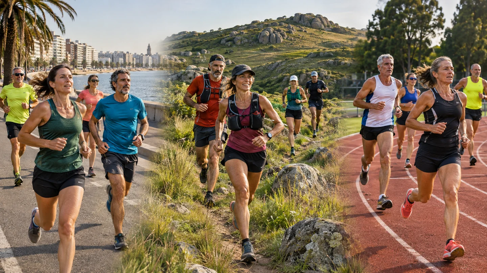
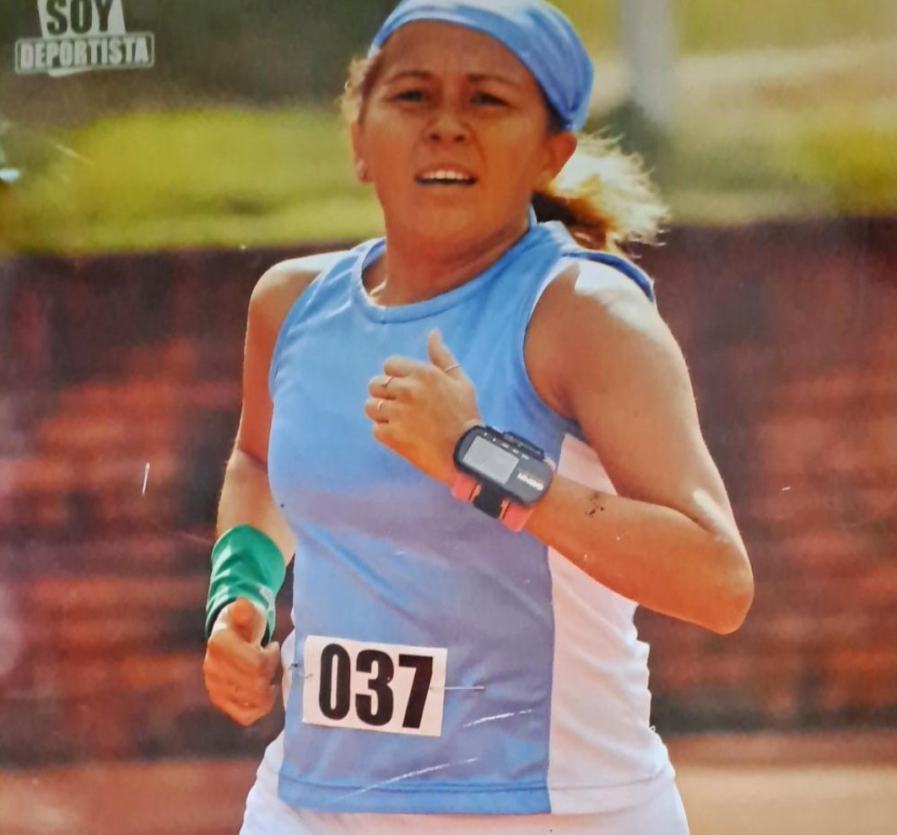
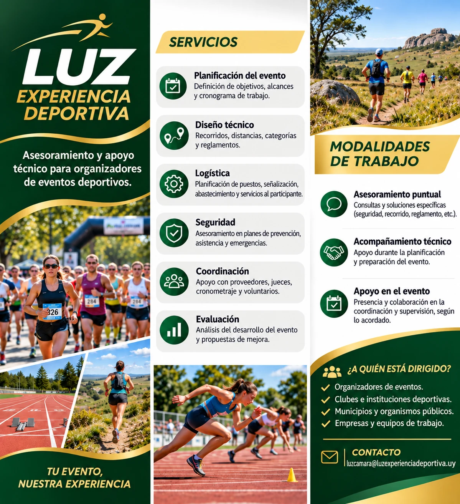

01
Planificación
Objetivos, alcance, cronograma y organización de tareas.
Asesoramiento y apoyo técnico para organizadores de eventos deportivos.
Tu evento, nuestra experiencia.
Conocer nuestros serviciosAcompañamos a organizadores, clubes, instituciones y equipos de trabajo en la planificación y desarrollo de competencias, con especial foco en running, trail y atletismo.
El organizador mantiene la conducción de su evento; nosotros aportamos asesoramiento y apoyo técnico según sus necesidades.
Objetivos, alcance, cronograma y organización de tareas.
Asesoramiento sobre recorridos, distancias, categorías y reglamentos.
Planificación de señalización, puestos, abastecimiento y servicios al participante.
Apoyo en la planificación de prevención, asistencia y respuesta ante emergencias.
Asesoramiento para articular proveedores, jueces, cronometraje y voluntariado.
Análisis posterior del evento e identificación de oportunidades de mejora.
Trabajamos con la realidad de las competencias deportivas en Uruguay, desde carreras de calle hasta eventos de trail en senderos, campos y sierras, y encuentros de atletismo.
Carreras de calle y running · Competencias de pista y atletismo · Trail

Imagen ilustrativa creada con inteligencia artificial.

Atleta máster internacional
Atleta de medio fondo y fondo, con trayectoria en competencias de pista, calle y trail running.
Participó en Campeonatos Mundiales de Atletismo Máster en Porto Alegre (Brasil) y Lyon (Francia).
Su experiencia como deportista le permite comprender de primera mano las necesidades de los atletas y la importancia de una organización orientada a la seguridad, la calidad y la experiencia de participación.
Trayectoria en pruebas de medio fondo y fondo, en pista, calle y trail, con participación internacional en atletismo máster.
La mirada de una atleta aporta una perspectiva práctica para acompañar a quienes organizan competencias.
Conocemos el deporte desde adentro. Queremos contribuir al desarrollo de eventos bien organizados, inclusivos y con una experiencia positiva para atletas, instituciones y comunidades.
Consultas concretas sobre recorridos, reglamentos, logística o planificación.
Apoyo durante las etapas de diseño y preparación de la competencia.
Colaboración en la coordinación y supervisión operativa, según lo acordado.
Nuestros servicios y modalidades de trabajo, en un solo volante.

El volante contiene imágenes ilustrativas creadas con inteligencia artificial.
¿Estás organizando una carrera o competencia? Conversemos sobre los desafíos de tu proyecto y el tipo de apoyo que necesitás.
LUZ EXPERIENCIA DEPORTIVA · Luz Rocha